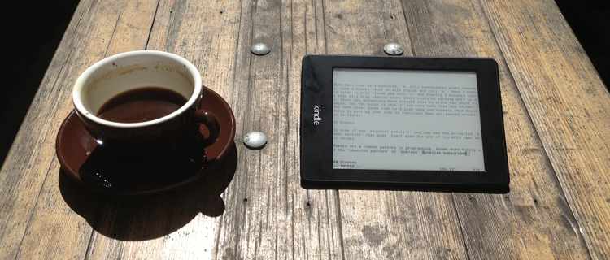
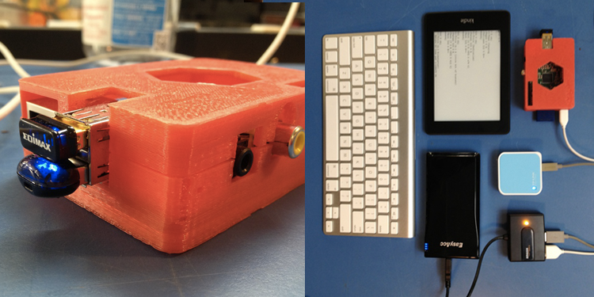

An updated, wireless version of the

Recently I got to go down to Australia to attend an awesome conference called CampJS. It isn't really a conference, actually, but instead a bunch of programmers in the woods for a few days hacking on side projects and learning new things. Getting out of the big city was really refreshing and at the same time made me realize how badly my glossy screened laptop works in the great outdoors.
It got me wondering if there existed a laptop that was designed for hacking in direct sunlight... something that had a ridiculously long battery life and was still readable in high brightness situations. Instead I stumbled upon a more awesome solution: the
The advantages of the kindleberry are pretty desirable for me:
The idea of the kindleberry is to have the kindle just act as screen and have it log into an ssh session on the pi. Then you can plug a keyboard into the pi and it when you type it will show up on the kindle screen. This approach pretty much only works for terminals so you can't do anything except edit code in vim. I like this limitation as it gives me an option that is free from distraction for writing long pieces of code or text in any environment.
The first problem I ran into was that the kindleberry instructions only worked on Kindle 3 devices, and the newest generation of Kindles (e.g. the paperwhite) are Kindle 5's. While the end result is similar this just means that essentially all of the steps to set up and install the peripherals correctly were different, including the terminal software that runs on the kindle. The other issue was that I wanted a totally wireless version: no cords between the keyboard, kindle or pi.
Here is a list of physical parts that I am using in my setup:

For the software side of things, the best resource is this nice tutorial that Rod Vagg has put together for getting the paperwhite set up with a terminal emulator. He even compiled node.js 0.10.0 for the kindle as well!
My pi is configured to boot up and join the wifi hotspot that the TP-LINK router creates, then I can have the kindle communicate to the pi over wifi. There is probably a way to ad-hoc them together automatically but having a little hotspot is handy for other things like too like mobile web app development.